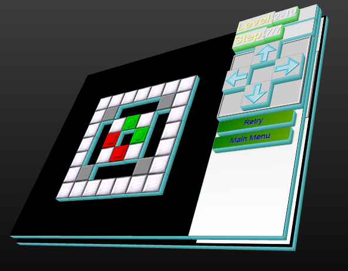
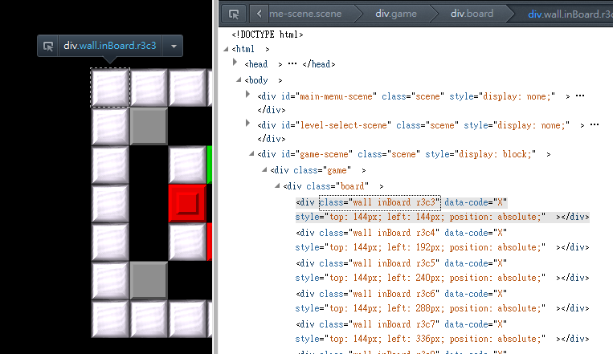
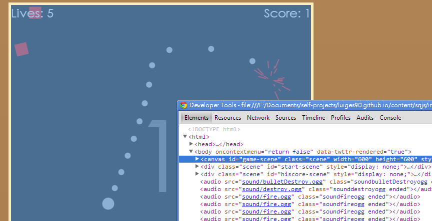

Canvas vs. DOM Sprites: An actual experience.
Some may ask, whether I should use Canvas or DOM to create a game running on modern browsers? There are a few articles out there, However, I would like to share a bit of my experience of both technologies.
DOM Sprites - Tilt Blocks
Tilt Blocks, a puzzle game, is entirely written in DOM Sprites.
 
Basically, each scene, the game board, controls, and down to each element are a hirerachy of <div> elements, as you can find in the code. Some divs are empty, as they are to be populated by Javascript. While some others, mostly elements which do not change due the entire session, has elements pre-placed in it.
Why?
To be frank, it is because I am not ready to learn a new technology at that time, while I was fairly familiar with DOM (really, <div>s) manuipulation by JQuery, used extensively to manipulate the DOM. However, as the code grows, there are a few benefits of doing this:
- The level editor becomes surprisingly easy to code. More on that later.
- No need to handle where is the mouse and determine what is clicked - just do
$('#elem').click(function(){...}); - Moving blocks around is easy, just do
$('.elem').animate({...});. Don't forget to change internal state too (also required in canvas.) - Old browsers (namely, the hated IE8) support - even though this is not my requirement, it is definitely a plus. (Tried this, IE8 looks quite good, and even IE7 is playable (though there are layout issues)).
Level Editor?
If I were to use canvas to implement the game as well as the level editor, not just I have to deal with clicks by hand, the scrollpane (palette of elements) would also have to be implemented by hand, and this already sounds tricky, and I even need to capture clicks inside... (Anyone wants to do this may want to look at this question over StackOverflow, though.)
However, with DOM, this become trivial. With help of a plugin familiar to me (jScrollPane), I can easily create the scrollpane. And the editor was done in just one or two days.
Gotchas?
Sure. At first, I populated the entire board with divs (i.e. even empty block has a div in it). However, when I move it, problem arises - divs of empty element and actual blocks moved overlaps. This breaks the entire thing of one block occupies one space. Of course I can move empty blocks around, but as many blocks in a row can be moved at once, quite a number of empty divs can be displaced, complicate things, and causes slow down. Moreover, it appears that the performance isn't that good.
So, I decided to let empty space be no div there. Less divs mean better performance.
Another gotcha is, remember to associate the div with the corresponding entity in the game state. Only this can leverage the DOM easily and simply. Few CSS classes would do. Specification varies from game to game really. In Tilt Blocks, it is specified by its location, in format r2c3. This way, we can easily pick up an element on a specified position, and then move it.
However, this way only works if there is only one (movable) element in any position at any time. In Tilt Blocks, I have used another class specifiying its type (red, arrows, etc...), and as only a few type of blocks can move around, I can just use $('.r1c1').not('.classes') to filter out immovable things. This works because all movable blocks will never overlap.
Canvas - Sq
Sq, a Geometry war clone, was mostly implemented in Canvas instead. However, the minimal UI that you see in the front page as well as highscore page still uses DOM. (Not sprites really, I would call it a DOM-based layout like ordinary websites.)

At first, I also tried to use DOM Sprites in this project. And you guessed it, each square enemy, circle player, circle bullets, and the texts are all a single div. And, rotation can be done with CSS Translations. (No particle effects have been implemented at that time.)
However, when there is a hundred divs. (Which is typical especially at later stages), it is very slow... It's like, at most 10 FPS I think - totally unacceptable (Note: there was no serious measurement). My machine is not slow at all (a 4 years old entry-level laptop), and should handle 2D games pretty easily...
This was not a problem in Tilt Blocks, because that game is pretty static and see, there isn't even a game loop! Tilt blocks was entirely event-driven, but Sq is not.
More importantly, there is no need capture mouse click on a certain element (Except the UI part), and there is no need to retrieve the status from drawn elements (because all those are kept track by Box2D.) That said, the big advantage of DOM Sprite cannot be leveraged.
As a side note, indeed, even if I have to determine where the mouse is, in terms of game element, it is not difficult thanks to Box2D built-in functions.
Hence, I switched to canvas.
And with canvas, hundreds, even thousands of elements can be drawn without too much delay. Even with particles the game rarely lags. For even more elements, it could slow down, but the burden is actually on the internals (mainly, collision detection of Box2D), rather than rendering.
Gotchas?
As I have said, the entire game is actually a hybrid approach. The UI and scene switch is ordinary DOM while the main game is canvas. This way I can leverage the efficiency of canvas in the main game, while making the relatively static main page and highscore page easy to implement (because there is no need to determine mouse position and button position when clicking).
Canvas vs. DOM Sprites
As usual, it really depends on what you want to do. They are just two different tools. You can see their performance may vary depends on how you use it. After all, they have different advantages.
For DOM Sprites, you have
- Remove the burden of finding out where the mouse is, in terms of which element it is on.
- More established, ready-to-use solutions (such as scroll pane, simple animations).
For HTML5 Canvas, you have
- Better performance, because of less overhead of keeping track of each
divelement.